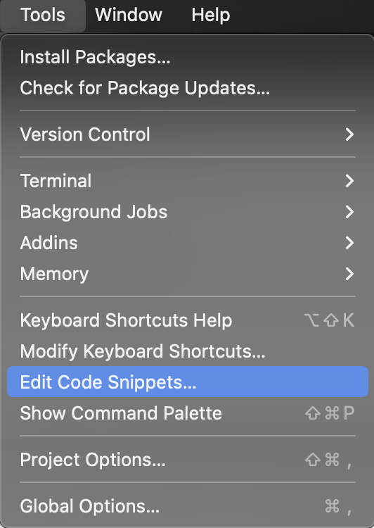
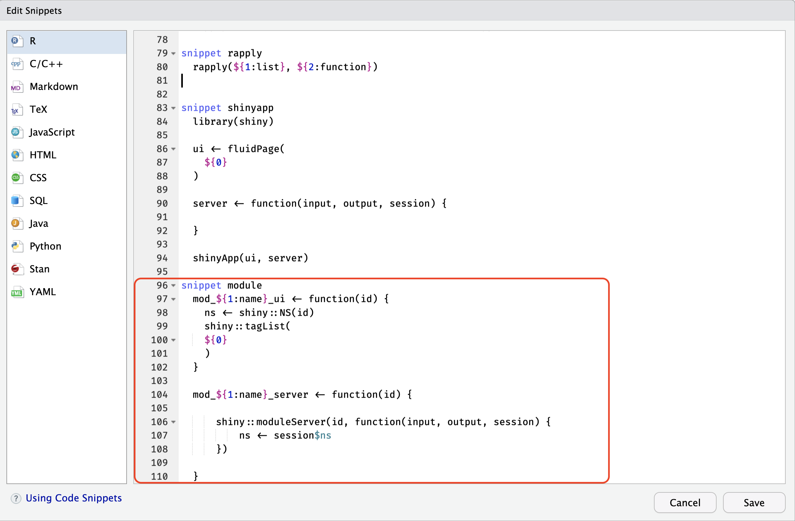
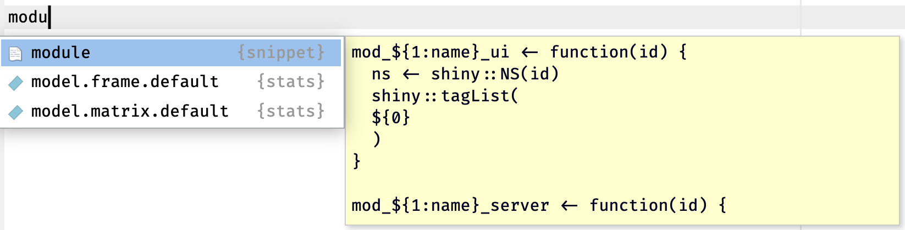
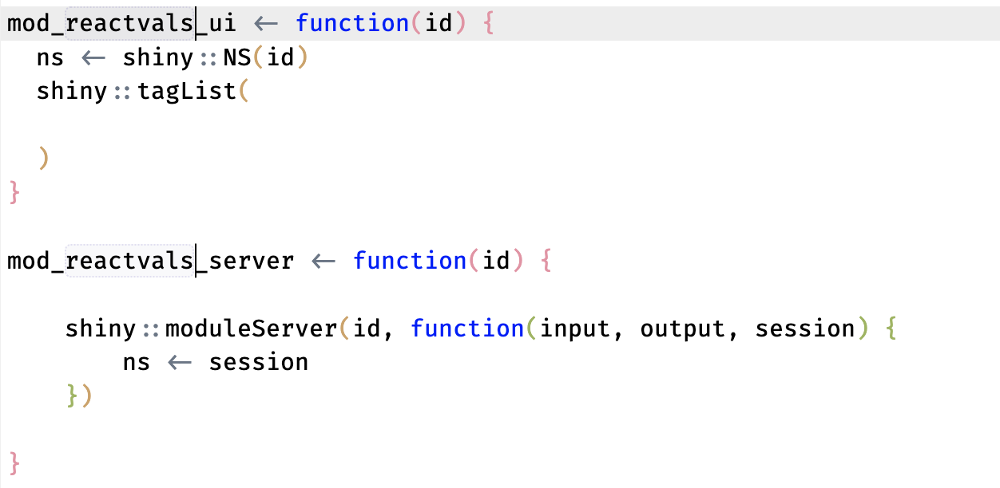

Getting started with modules
getting-started.RmdPurpose
The purpose of this vignette is to demonstrate how NS()
and moduleServer() create isolated namespaces for the IDs
in a module. To do this, I’ll create a basic module:
reactvals
The packages I’ll use are loaded below:
Creating modules (with a snippet)
The fastest way to add a module is using Posit’s code snippets, which I can access using Tools > Edit Code Snippets :

This will open the Edit Snippets window where I can
add or edit the existing code snippets. I’ll place the new
module snippet at the end/bottom:

The code to create a module with a snippet is below:
-
Note that I’m using a
mod_prefix on both functions, and the_uiand_serversuffixsnippet module mod_${1:name}_ui <- function(id) { ns <- shiny::NS(id) shiny::tagList( ${0} ) } mod_${1:name}_server <- function(id) { shiny::moduleServer(id, function(input, output, session) { ns <- session$ns }) }
After entering the snippet code, I click Save. To
create a new module, I create the .R file using the drop-down or
usethis::use_r(), then start typing
module:

- This module naming convention is my preference, but it’s a good practice to make sure you can easily identify the UI and server module function pairs (and being able to use the tab-completion is always nice, too)
I can hit tab and BAM–new code for my module:
mod_name_ui <- function(id) {
ns <- shiny::NS(id)
shiny::tagList(
)
}
mod_name_server <- function(id) {
shiny::moduleServer(id, function(input, output, session) {
ns <- session
})
}My cursor is set on the <name> for both
the UI and server module functions, so I can just type the new name of
my new module:

And it changes in both places:

This is also covered in Mastering Shiny.
Creating modules (with shinymods)
# put in UI ----
mod_reactvals_ui <- function(id) {
ns <- shiny::NS(id)
shiny::tagList(
shiny::fluidRow(
shiny::column(
width = 12,
shiny::verbatimTextOutput(
outputId = ns('vals')
)
)
)
)
}
# put in server ----
mod_reactvals_server <- function(id) {
shiny::moduleServer(id, function(input, output, session) {
ns <- session$ns
output$vals <- shiny::renderPrint({
vals <- shiny::reactiveValuesToList(
x = input, all.names = TRUE
)
print(vals)
})
})
}Module structure
mod_reactvals_ui <- function(id) {
ns <- shiny::NS(id)
shiny::tagList(
)
}
mod_reactvals_server <- function(id) {
shiny::moduleServer(id, function(input, output, session) {
ns <- session
})
}The app below is identical to the app in Getting Started with {shinytest2} Part I | Example + basics | RStudio.
library(shiny)
library(stringr)
ui <- shiny::fluidPage(
shiny::textInput("name", "what is your name"),
shiny::actionButton("greet", "Greet"),
shiny::textOutput("greeting"),
shiny::textOutput("first_letter")
)
server <- function(input, output, session) {
output$greeting <- shiny::renderText({
shiny::req(input$name)
paste0("Hello ", input$name, "!")
}) |>
bindEvent({input$greet})
first_letter <- shiny::reactive({
shiny::req(input$name)
stringr::str_to_lower(
stringr::str_extract(input$name, "^."))
}) |>
shiny::bindEvent({input$greet})
output$first_letter <- shiny::renderText({
paste0("The first letter in your is ",
first_letter(), "!")
})
}
shiny::shinyApp(ui, server)